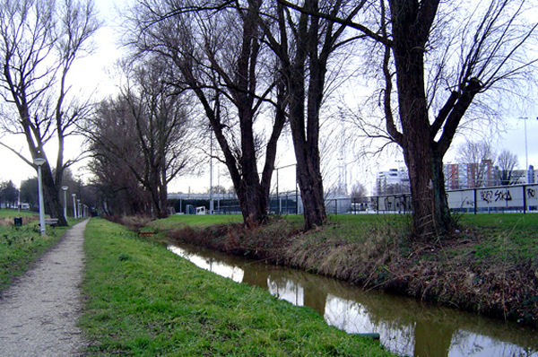
Twee eigen-vervoer-supporters ontdekken een aangenaam rustig stukje schaars
natuurschoon in
Rotterdam.
foto: blog party
en headmusic
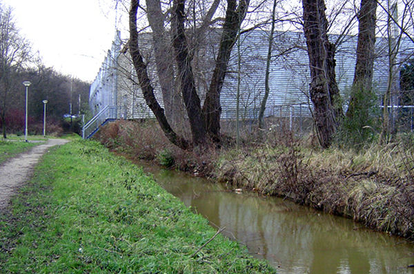
Achter deze heuse slotgracht wordt een ophaalbrug ontwaard die leidt naar
het gastenvak van
Woudenstein.
foto: blog party
en headmusic
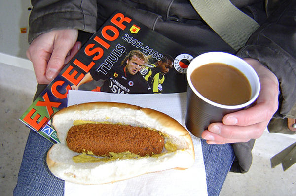
De vriendelijk geserveerde kwaliteitssnacks.
foto:
blog party en
headmusic
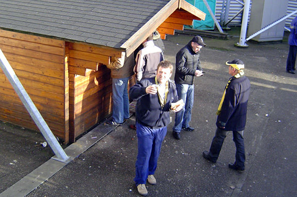
Dit in een original Tiroler Skihütte.
foto:
blog party en
headmusic
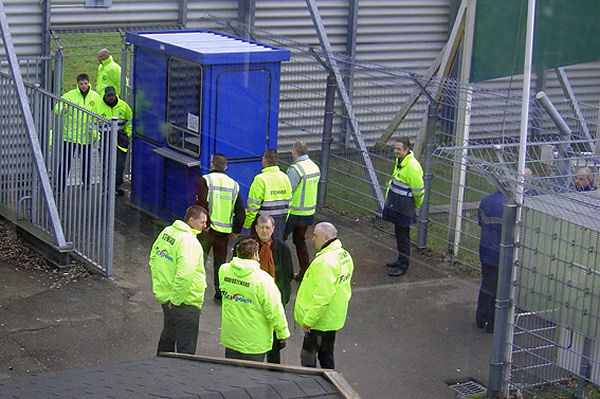
De stewards maken zich op voor de komst van de vier supportersbussen.
foto:
blog party en
headmusic
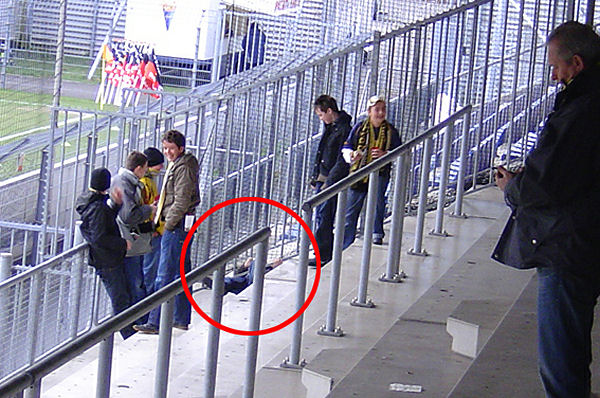
Een underfive demonstreert dat de hoogte van het hekwerk in Rotterdam er
niet toe doet.
foto: blog party
en headmusic
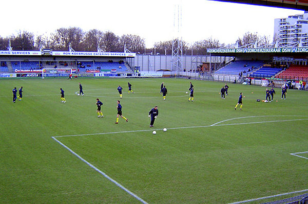
Warming-up in het kleinste stadion van de eredivisie.
foto:
blog party en
headmusic
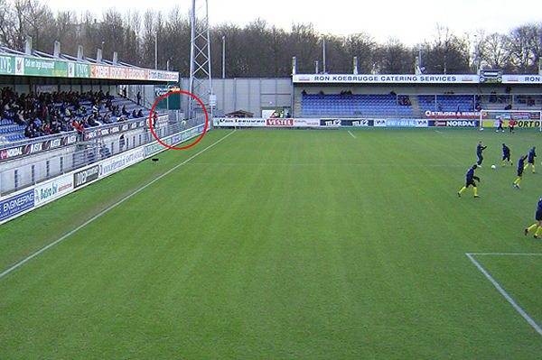
Een nieuw fenomeen in steward-land: Excelsior heeft een plas-steward in
dienst die de Roda-dames over
vijandelijk gebied begeleidt naar het dichtstbijzijnde toilet...
foto: blog party
en headmusic
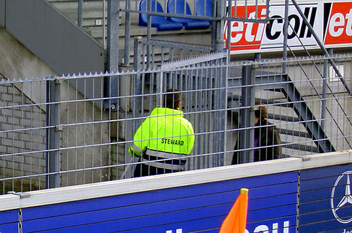
... en terug!
foto:
blog party en
headmusic
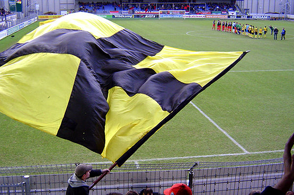
Tijdens de opkomst van de spelersgroepen zorgen de 240 meegereisde Rodafans
als enige voor wat
sfeer in een leeg, koud en verder muisstil stadion...
foto: blog party
en headmusic
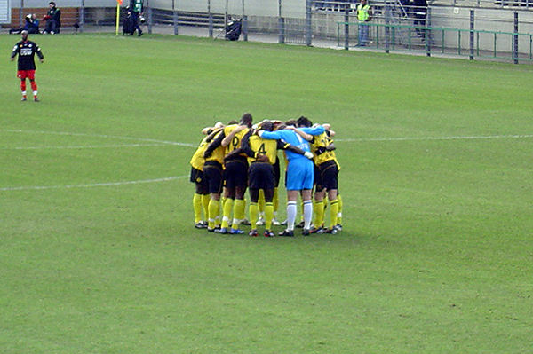
Zakdoekje leggen, niemand zeggen..... oftewel adrenaline pompen.
foto: blog party
en headmusic
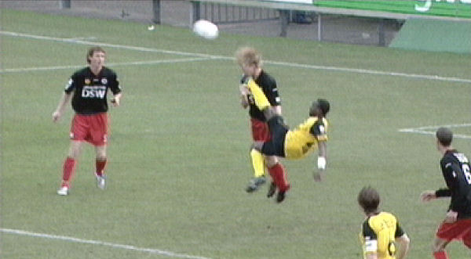
Bij een onhandige omhaal treft Lamah debutant Bovenberg in het gezicht.
Lamah houdt er een gele
kaart aan over en Bovenberg een gebroken jukbeen.
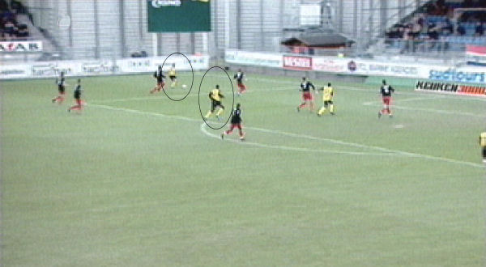
Meeuwis passt op Bodor die hier de bal naar Cissé stuurt.
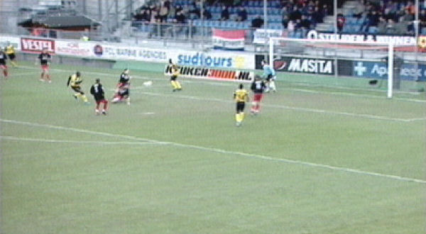
0-1, (27').
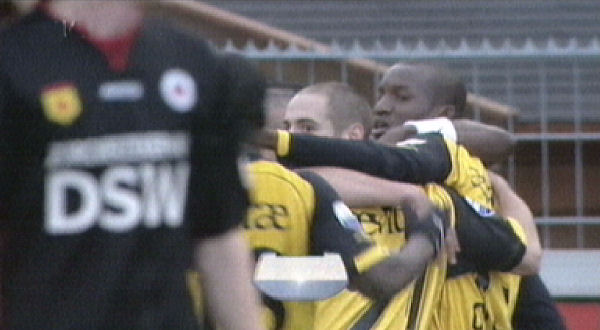
Aangever en scorer in de omarming.
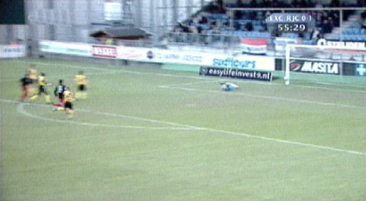
Roda speelt lankmoedig in de tweede helft waardoor Excelsior de
gevaarlijkere ploeg wordt. Hier een
schot op de paal van Koolwijk.
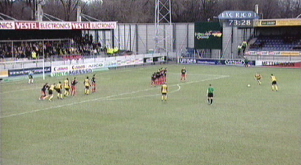
Vrije trap Bodor.
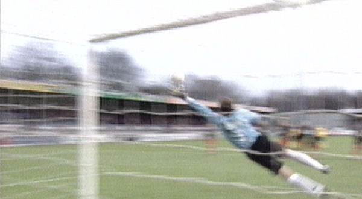
Doelman Graafland staat goed opgesteld maar toch krult de bal in de korte
hoek: 0-2, (74').
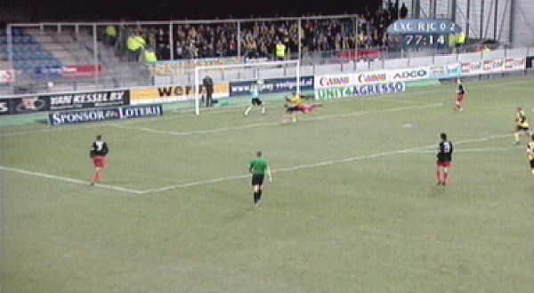
Hier redt Graafland prima op een kopbal van Oper.
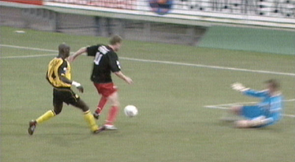
Kah onderschept een voorzet van Korf niet goed door de bal van zijn enkel te
laten springen. Voskamp
accepteert dit cadeautje en scoort 1-2, (86').
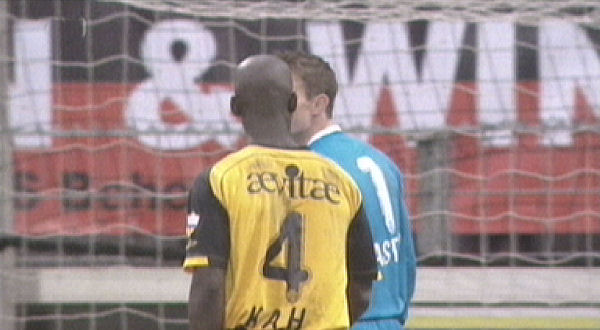
Er breekt een hectische slotfase aan met veel kansen voor Excelsior. Kah
heeft hier een bijna-doelpunt
voorkomen.
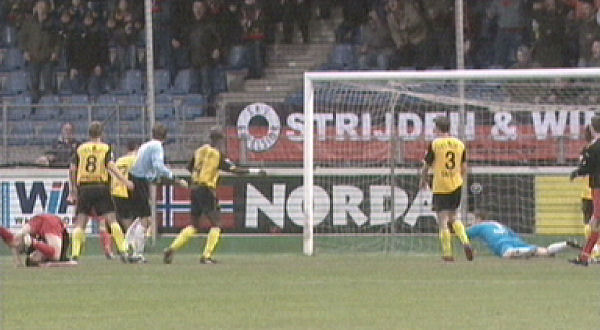
De wedstrijd blijft tot de laatste seconde spannend. Hier een van de vele
reddingen van Castro.
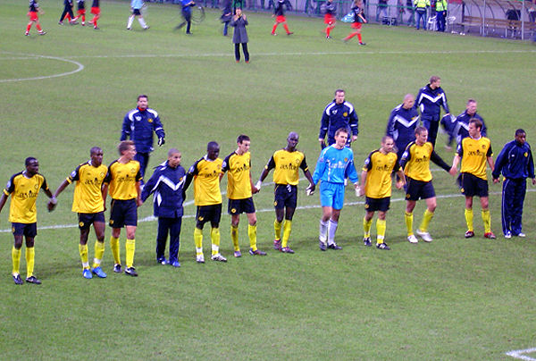
Na de zwaarbevochten overwinning, waarin Roda het zichzelf weer eens onnodig
moeilijk maakte,
werd het publiek bedankt onder toeziend oog van Huub Narinx.
foto: blog party
en headmusic
Foto's van Excelsior for life
>>>